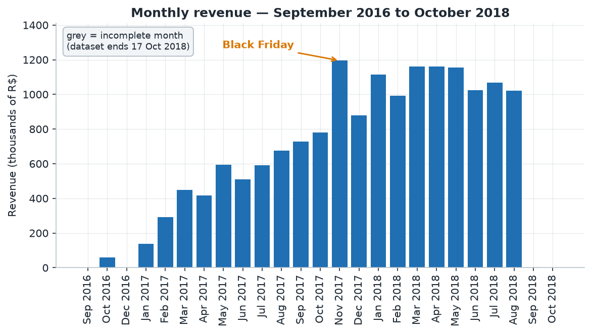
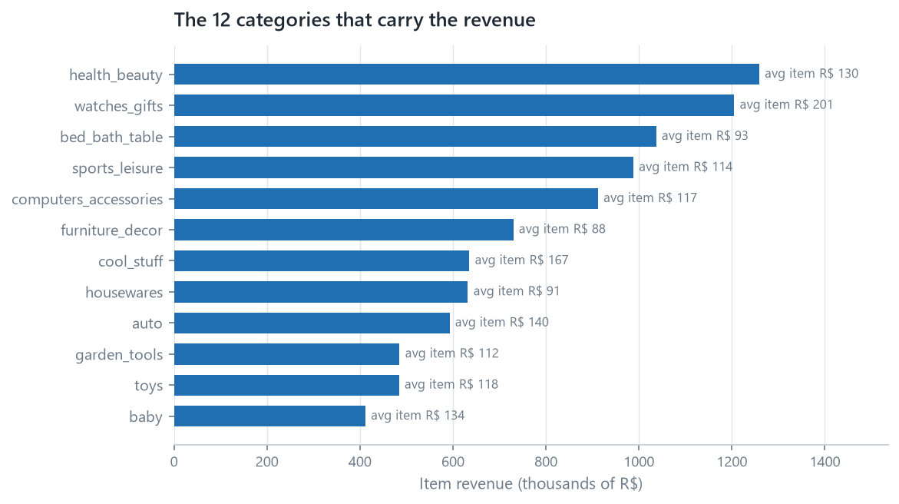
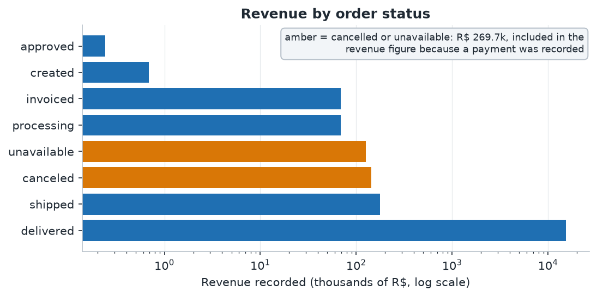
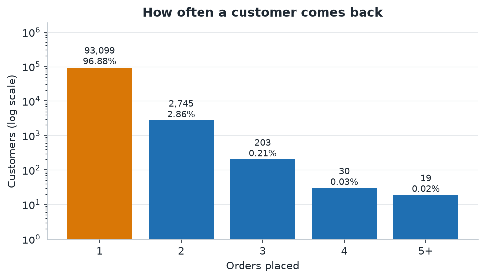
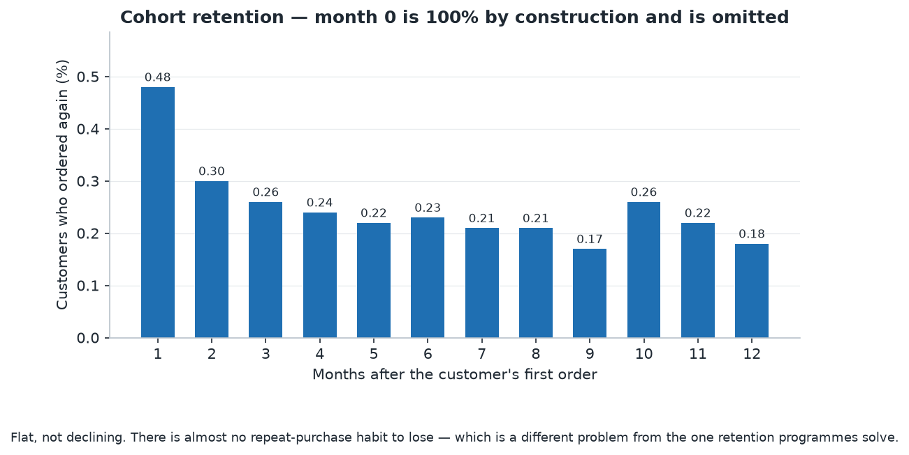
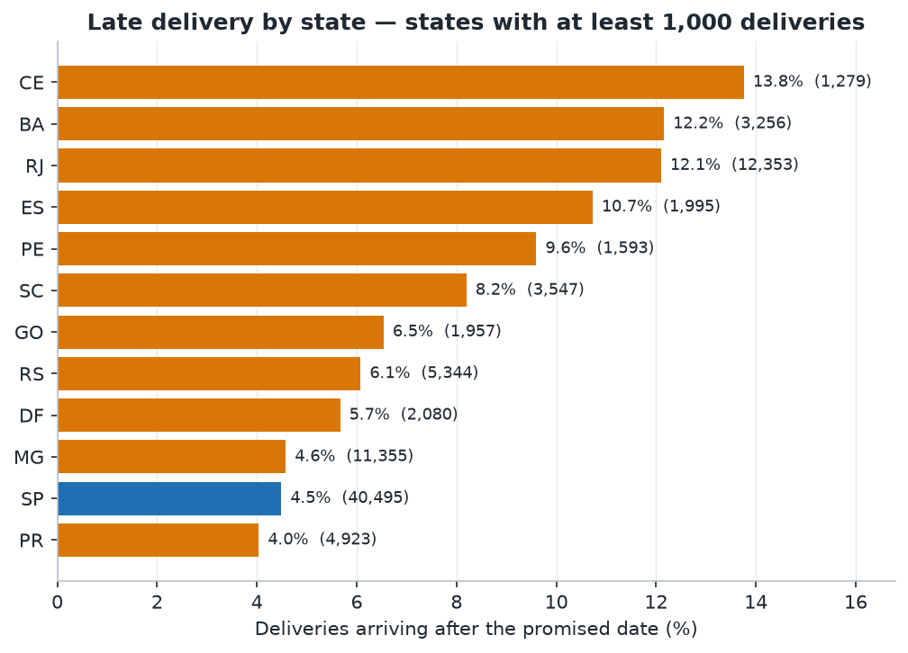

flowchart TB
O["orders<br/>99,441 rows"]
subgraph fine["finer-grained tables"]
I["order_items<br/>112,650 rows"]
P["order_payments<br/>103,886 rows"]
R["order_reviews<br/>99,224 rows"]
end
I --> AGG["aggregate to one row per order<br/>sum, count, latest review"]
P --> AGG
R --> AGG
AGG --> FO["fct_orders<br/>99,441 rows"]
O --> FO
FO --> Q["every total in this report"]
01 · Retail Analytics
What this marketplace sells, who buys it, and what a late delivery costs
This is an analysis of the Olist Brazilian e-commerce dataset — 99,441 orders placed between September 2016 and October 2018 on a marketplace that connects sellers to buyers. Every number below was computed in SQL from the tested models in projects/01-retail-analytics/dbt_project, and the model each table comes from is named underneath it.
The question I set out to answer was not “what happened” but which levers actually move customer satisfaction and repeat purchase. Three answers emerged, and one of them was uncomfortable.
Executive summary
Short on time? The one-page decision memo carries the recommendation and the numbers behind it. This report is the reasoning.
- R$ 16.0M passed through the marketplace in 25 months, across 99,441 orders at an average of R$ 160.99. Freight is 14.1% of everything customers paid.
- This is an acquisition business, not a retention business. Of 96,096 customers, 96.9% bought exactly once. The repeat rate is 3.1%, and month-one retention is 0.48%. Growth here cannot come from a loyalty programme, because there is almost nothing to be loyal with.
- Late delivery is rare and expensive. 93.2% of deliveries met the promised date. The 6.8% that did not average a review score of 2.27, against 4.29 for on-time orders. Beyond a week late, roughly 80% of customers give one or two stars.
- Lateness is geographic and concentrated. Rio de Janeiro is late on 12.1% of deliveries, Bahia 12.2% and Ceará 13.8%, against São Paulo’s 4.5%.
- The cheapest improvement available is in Rio de Janeiro. It is the second-largest market, and roughly 940 orders a year would not be late if it performed like São Paulo.
1. Where the revenue comes from
R$ 16,008,872.12 across 99,441 orders. The shape over time matters more than the total, because two of the twenty-five months are not what they look like.
| Month | Orders | Customers | Revenue (R\() | Avg order (R\)) | |
|---|---|---|---|---|
| 2016-09 | 4 | 4 | 252.24 | 84.08 |
| 2016-10 | 324 | 321 | 59,090.48 | 182.38 |
| 2016-12 | 1 | 1 | 19.62 | 19.62 |
| 2017-01 | 800 | 765 | 138,488.04 | 173.11 |
| 2017-02 | 1,780 | 1,755 | 291,908.01 | 163.99 |
| 2017-03 | 2,682 | 2,642 | 449,863.60 | 167.73 |
| 2017-04 | 2,404 | 2,372 | 417,788.03 | 173.79 |
| 2017-05 | 3,700 | 3,625 | 592,918.82 | 160.25 |
| 2017-06 | 3,245 | 3,180 | 511,276.38 | 157.56 |
| 2017-07 | 4,026 | 3,947 | 592,382.92 | 147.14 |
| 2017-08 | 4,331 | 4,246 | 674,396.32 | 155.71 |
| 2017-09 | 4,285 | 4,212 | 727,762.45 | 169.84 |
| 2017-10 | 4,631 | 4,561 | 779,677.88 | 168.36 |
| 2017-11 | 7,544 | 7,430 | 1,194,882.80 | 158.39 |
| 2017-12 | 5,673 | 5,603 | 878,401.48 | 154.84 |
| 2018-01 | 7,269 | 7,166 | 1,115,004.18 | 153.39 |
| 2018-02 | 6,728 | 6,569 | 992,463.34 | 147.51 |
| 2018-03 | 7,211 | 7,115 | 1,159,652.12 | 160.82 |
| 2018-04 | 6,939 | 6,882 | 1,160,785.48 | 167.28 |
| 2018-05 | 6,873 | 6,814 | 1,153,982.15 | 167.90 |
| 2018-06 | 6,167 | 6,128 | 1,023,880.50 | 166.03 |
| 2018-07 | 6,292 | 6,230 | 1,066,540.75 | 169.51 |
| 2018-08 | 6,512 | 6,460 | 1,022,425.32 | 157.01 |
| 2018-09 | 16 | 14 | 4,439.54 | 277.47 |
| 2018-10 | 4 | 4 | 589.67 | 147.42 |

Two months are artefacts, and reading them as a trend would be a mistake.
The last two rows are not a collapse. The dataset ends on 17 October 2018, so September and October are partial months — September’s 16 orders represent roughly the first half of the month, and October’s 4 orders represent seventeen days of a month that mostly did not happen. Month-over-month growth read from those rows is meaningless.
2016 is the opposite problem: it is a launch, not a quiet year. Ten orders across three months, then 324 in October alone. The business effectively starts in 2017, and any year-over-year comparison that begins in 2016 is comparing a company to a company that had not opened yet.
The real signal is elsewhere. November 2017 is the largest month in the dataset — 7,544 orders and R$ 1.19M, 63% above October — which is consistent with Black Friday. And 2018 settles into a plateau around 6,300–7,300 orders a month with no strong growth trend, which is a different story from the one the top line suggests.
What sells
| Category | Orders | Items | Revenue (R\() | Avg item (R\)) | |
|---|---|---|---|---|
| health_beauty | 8,836 | 9,670 | 1,258,681.34 | 130.16 |
| watches_gifts | 5,624 | 5,991 | 1,205,005.68 | 201.14 |
| bed_bath_table | 9,417 | 11,115 | 1,036,988.68 | 93.30 |
| sports_leisure | 7,720 | 8,641 | 988,048.97 | 114.34 |
| computers_accessories | 6,689 | 7,827 | 911,954.32 | 116.51 |
| furniture_decor | 6,449 | 8,334 | 729,762.49 | 87.56 |
| cool_stuff | 3,632 | 3,796 | 635,290.85 | 167.36 |
| housewares | 5,884 | 6,964 | 632,248.66 | 90.79 |
| auto | 3,897 | 4,235 | 592,720.11 | 139.96 |
| garden_tools | 3,518 | 4,347 | 485,256.46 | 111.63 |

There are 74 categories, and the top ten account for 62.4% of item revenue.
A note on why these numbers do not add up to the total. Category revenue counts item price only, and freight is excluded deliberately: one shipment often carries products from several categories, and freight is charged once for the whole order, so there is no honest way to attribute it. Categories therefore sum to R$ 13.59M against R$ 16.0M of payments, and the gap is freight, not a mistake. Of the R$ 2.25M that freight represents, R$ 162,591.95 belongs to 775 orders that carry a payment but no item line at all.
Three of the 74 categories have no English translation in the source. They keep their Portuguese names rather than being folded into an “unknown” bucket, which would hide them.
What the revenue figure includes
Payments are not the same as completed sales. A payment is recorded for orders that were later cancelled or marked unavailable, so those orders sit inside the R$ 16.0M above.

Together they are R$ 269,735.11 — about 1.7% of the total — and they are counted deliberately: the payment was collected. Excluding them would be a different and equally defensible definition. Stating which one is in use here means a reader who disagrees can disagree knowingly rather than silently.
2. Who the customers are
96,096 people made 99,441 orders.
| Orders placed | Customers | Share |
|---|---|---|
| 1 | 93,099 | 96.88% |
| 2 | 2,745 | 2.86% |
| 3 | 203 | 0.21% |
| 4 | 30 | 0.03% |
| 5–9 | 18 | 0.02% |
| 17 | 1 | 0.001% |

| Segment | Customers | Share | Avg spend (R$) | Avg days since last order |
|---|---|---|---|---|
| Others | 27,746 | 28.87% | 142.45 | 235 |
| At risk (was valuable) | 22,659 | 23.58% | 242.91 | 446 |
| Champions | 15,880 | 16.53% | 310.04 | 142 |
| Lost / low value | 15,427 | 16.05% | 55.16 | 448 |
| New / promising | 14,384 | 14.97% | 54.11 | 140 |
I am not going to pretend this segmentation is more useful than it is. RFM works by finding customers who buy often — and frequency barely varies here: 96.9% of customers ordered exactly once, so almost everyone ties on F and the ntile split separates that tied mass arbitrarily. What remains is a segmentation on recency and spend, in which “Champions” means bought recently and spent well, not loyal. A retention campaign aimed at that group would be aimed at first-time buyers.
I kept it anyway, for two reasons. It is the first thing most stakeholders ask for, and its failure here is the finding: you cannot segment your way into a retention strategy for a business where nobody repeats. The f_score column is documented in mart_rfm as close to meaningless for exactly this reason.
3. Do they come back?
No. 2,997 customers out of 96,096 ever placed a second order — a repeat rate of 3.12%. Repeat customers account for 6,342 of 99,441 orders, or 6.4%.
| Months after first order | Cohort size | Still active | Retention |
|---|---|---|---|
| 0 | 96,096 | 96,096 | 100.00% |
| 1 | 95,765 | 461 | 0.48% |
| 2 | 95,764 | 289 | 0.30% |
| 3 | 77,482 | 202 | 0.26% |
| 4 | 76,800 | 186 | 0.24% |
| 5 | 64,149 | 143 | 0.22% |
| 6 | 57,505 | 133 | 0.23% |
| 9 | 37,778 | 65 | 0.17% |
| 12 | 22,317 | 40 | 0.18% |
| 18 | 5,473 | 12 | 0.22% |

Month zero is 100% by construction — it is the month the customer was acquired — and a test asserts that, because an offset-zero that is not 100% would mean the cohort logic is broken rather than that the business changed.
The shape is the point. Retention does not decay from a high base; it starts at 0.48% and stays flat at roughly 0.2%. That is not the curve of a business losing customers. It is the curve of a marketplace where each purchase is close to independent of the last.
Two honest caveats. The observation window is 25 months, so a customer who would return in year three is simply invisible here — this is a floor, not the true lifetime repeat rate. And customer_unique_id is a derived identifier, so a person who changes their details may appear twice, which inflates the count slightly rather than deflating it.
What this means strategically. If 96.9% of revenue comes from first orders, growth is an acquisition problem, not a retention problem. A loyalty programme would spend money to influence a decision that 96.9% of customers are not currently making. The two levers that do exist are acquiring more customers and raising order value — and raising order value without repeat purchase means raising basket size per visit.
4. Does delivery performance explain satisfaction?
This is the strongest relationship in the dataset.
6,535 of 96,476 deliveries arrived after the promised date — 6.77%.
| Outcome | Orders | Share | Avg review | Reviews ≤2 | Avg delivery (days) |
|---|---|---|---|---|---|
| On time | 89,941 | 90.45% | 4.290 | 9.27% | 11.00 |
| Late: up to 7 days | 3,672 | 3.69% | 2.715 | 49.36% | 25.73 |
| Late: 8 to 14 days | 1,479 | 1.49% | 1.672 | 80.10% | 35.03 |
| Late: more than 14 days | 1,384 | 1.39% | 1.723 | 78.35% | 54.62 |
| Never delivered | 2,965 | 2.98% | 1.747 | 78.05% | — |

Aggregated, a late order averages 2.27 against 4.29 for an on-time one. That is not a rounding difference; it is the difference between a customer who is broadly satisfied and one who is not.
One result in that table surprised me. An order that never arrived scores 1.747, which is better than an order that arrived eight to fourteen days late (1.672). The worst experience in the table is not the missing parcel.
The likely explanation is that these are different situations rather than different severities. A cancelled or unavailable order is a closed event — usually refunded, and often communicated. An order that turns up 35 days late is not closed: the customer waited, and then still had to deal with the product. I would want to test that before acting on it, and I have not, so I am reporting it as an observation rather than a finding.
Where the lateness is
| State | Deliveries | Late | Late rate | Avg delivery (days) | Avg review |
|---|---|---|---|---|---|
| SP | 40,495 | 1,820 | 4.49% | 8.76 | 4.173 |
| RJ | 12,353 | 1,495 | 12.10% | 15.31 | 3.878 |
| MG | 11,355 | 520 | 4.58% | 12.01 | 4.135 |
| RS | 5,344 | 325 | 6.08% | 15.30 | 4.132 |
| PR | 4,923 | 199 | 4.04% | 11.99 | 4.182 |
| SC | 3,547 | 291 | 8.20% | 14.96 | 4.074 |
| BA | 3,256 | 396 | 12.16% | 19.34 | 3.861 |
| CE | 1,279 | 176 | 13.76% | 21.27 | 3.857 |

Lateness is not random across the country. São Paulo — 42% of all deliveries — is late 4.49% of the time and delivers in 8.76 days. Ceará is late 13.76% of the time and takes 21.27 days. The correlation between distance and lateness is visible in the delivery times themselves.
Rio de Janeiro is the actionable case. It is the second-largest market, 12,353 deliveries, and it is late 2.7× as often as São Paulo. If Rio performed at São Paulo’s rate, roughly 940 of its 1,495 late orders would not be late. Applying the review behaviour of late orders (49.36% scoring ≤2) against on-time orders (9.27%), that is on the order of 370 fewer one- and two-star reviews a year from Rio alone.
That estimate is an association, not a causal forecast — I have not shown that making a delivery on time causes the better review, only that the two travel together, and the customers who experience late delivery may differ in other ways. I would treat the number as a reason to investigate, not as a business case for a specific spend.
What I would do next
- Investigate the Rio de Janeiro corridor first. It is the largest pool of recoverable dissatisfaction in the dataset, it is concentrated enough to study, and the counterfactual is testable: compare Rio orders handled by different sellers or carriers over the same period.
- Re-examine the delivery promise itself. Olist’s estimates are extremely conservative — the average delivery arrives 11.18 days early, and 93.2% of orders are on time. A promise that is beaten almost every time is not necessarily a good one: it may be costing conversions, and a customer who is told “up to 25 days” and receives it in 12 has been given a worse experience than one told “in 12”. Tightening the promise would trade a higher measured late rate for better-calibrated expectations, and that trade is worth quantifying rather than assuming.
- Test the missing-parcel result. An order that never arrived scored better than one that arrived two weeks late. That is either a real difference in how the two failures are handled or an artefact of who chooses to review at all, and it is testable with the data already loaded. Until it is tested I am reporting it as an observation, not a finding.
- Feed Project 02. The delivery buckets are the natural target for the late-delivery prediction model, and the constraint is already clear: only features knowable at purchase time may be used.
Limitations
These are stated before the numbers are used, not after, because they shape how the numbers should be read:
- The dataset is a snapshot from September 2016 to October 2018, not a live feed. September and October 2018 are partial. Anything described here is one observation of one period, not a trend.
- Reviews are self-selected. Only customers who chose to leave a review appear — 98,673 of 99,441 orders. Their satisfaction is not the population’s, and a 4.29 average among respondents is not a 4.29 average among customers.
- “Revenue” means gross merchandise value as recorded in the payment table. There is no cost, margin, refund or return data in this dataset, so no statement about profit is possible — only about money collected.
- Revenue includes orders later cancelled or marked unavailable (1,234 orders, R$ 269,735.11 — the two amber bars in Figure 3), because a payment was recorded for them. Excluding them would be a different and equally defensible definition; this one is stated so the reader can disagree with it knowingly.
customer_unique_idis derived and imperfect. Repeat-purchase findings are a floor, not a ceiling.- Order counts and item counts are different grains. Anything about products or categories comes from
fct_order_items; anything about money, delivery or review comes fromfct_orders. Mixing them is the most likely way to produce a wrong total. - Where delivery timestamps are missing (2,965 orders), those orders are excluded from delivery statistics rather than imputed, and kept as their own bucket where the customer’s experience is the subject.
Reproducing this
Every table above comes from a model in projects/01-retail-analytics/dbt_project:
| Table | Model |
|---|---|
| Revenue by month | mart_revenue_monthly |
| Category revenue | mart_category_revenue |
| Customer segments | mart_rfm |
| Cohort retention | mart_cohort_retention |
| Delivery outcomes | mart_delivery_performance |
| Lateness by state | mart_late_delivery_by_state |
How the order table is built
The most important engineering decision in this analysis is that the order-level table is assembled by aggregating three finer-grained tables before joining them, instead of joining them directly.
Aggregate first, then join. A direct join multiplies rows, and nothing errors.
A direct join would multiply rows: an order with four items and three payments would contribute twelve rows to every count and twelve times its value to every sum. Every figure in this report would be wrong, the SQL would compile, and the build would pass. There is a written record of that decision, and of the review quirk it exposed, in docs/decisions/.
From the mirror to the page
flowchart TB
M["Hugging Face mirror<br/>revision pinned"] --> D["download_data.py"]
D --> CSV["9 CSV files<br/>~126 MB, never committed"]
CSV --> L["load_raw.py<br/>every column TEXT"]
L --> DB[("PostgreSQL<br/>schema: raw")]
DB --> S["dbt staging<br/>views — cast and rename"]
S --> F["dbt marts<br/>tables — 70 data tests"]
F --> C["make_charts.py"]
C --> FIG["PNG figures"]
F --> REP["Quarto report"]
FIG --> REP
Only the three steps through dbt marts need a database. The report and the figures are committed, so the website builds without one.
uv run python tasks.py setup # start the database and fetch the data
uv run python tasks.py pipeline # load, build, charts, test, renderdbt build also runs 70 data tests, including one that asserts month-zero retention is exactly 100% and one that asserts the late flag and the lateness in days cannot disagree. Both exist because they were wrong once.